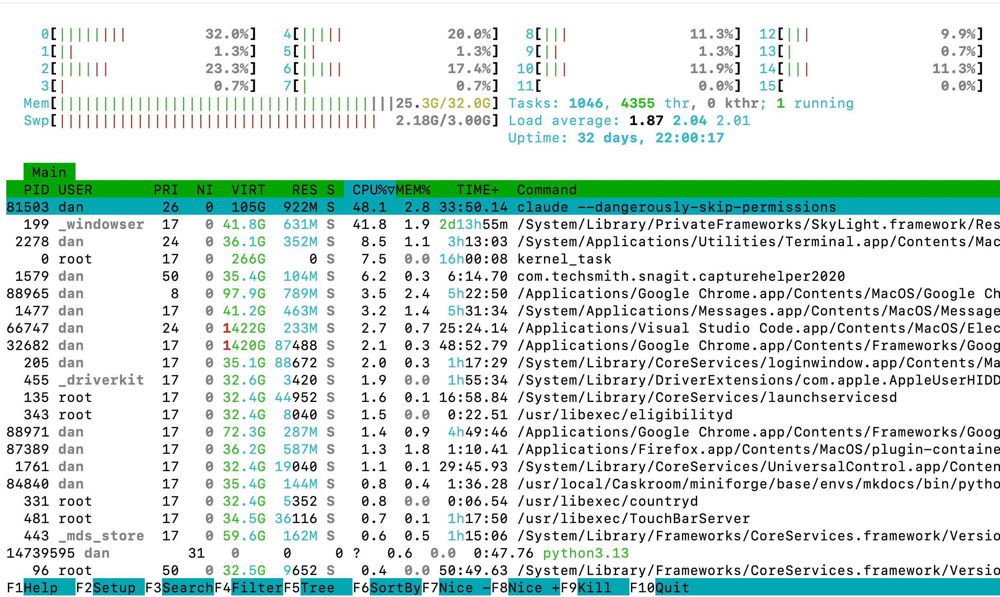

Process Management and Job Control
Summary
This chapter explains how Linux manages running programs. You'll learn about processes, process IDs, and the parent-child relationship between processes. Master job control with foreground/background processes, monitor system activity with ps, top, and htop, and learn to terminate processes with kill signals. Understanding processes is essential for troubleshooting and system administration.
Concepts Covered
This chapter covers the following 25 concepts from the learning graph:
- Processes
- Process ID
- Parent Process
- Child Process
- Foreground Process
- Background Process
- Ps Command
- Ps Options
- Top Command
- Htop Command
- Kill Command
- Kill Signals
- Killall Command
- Pkill Command
- Jobs Command
- Fg Command
- Bg Command
- Nohup Command
- Ampersand Operator
- Process Priority
- Nice Command
- Renice Command
- Pgrep Command
- Process States
- Zombie Processes
Prerequisites
This chapter builds on concepts from:
What's Running on Your Computer Right Now?
Ever wonder what's happening inside your computer at this very moment? Spoiler alert: A LOT. Even when you think your computer is "doing nothing," there are dozens—sometimes hundreds—of programs running behind the scenes.
In this chapter, you'll learn to peek behind the curtain and see exactly what's going on. You'll learn to monitor, control, and even terminate programs that misbehave. Think of yourself as the manager of a busy restaurant kitchen—you need to know who's cooking what, who's slacking off, and occasionally, who needs to be fired (terminated, in process-speak).
Let's dive into the world of processes!
Processes: Programs in Action
A process is simply a program that's currently running. When you double-click an app or type a command, the operating system creates a process for it.
Here's the key distinction:
- Program: A file on disk (like
/usr/bin/firefox) - Process: That program loaded into memory and executing
You can have multiple processes from the same program. Open three terminal windows? That's three processes, all running the same terminal program.
1 2 3 4 | |
Process ID: Every Process Has a Number
Every process gets a unique process ID (PID)—a number that identifies it. Think of it like a social security number for programs.
1 2 3 4 5 6 7 8 | |
PIDs are assigned sequentially, starting from 1. The process with PID 1 is special—it's init (or systemd on modern systems), the first process that starts when your computer boots.
Parent Process and Child Process
Processes have family relationships! When a process starts another process, it becomes a parent process, and the new one is a child process.
1 2 3 4 5 6 7 8 | |
The family tree goes all the way up:
init/systemd(PID 1) - The grandparent of all processes- Your login manager
- Your terminal emulator
- Your shell (bash/zsh)
- Commands you run
When a parent process dies, its children get "adopted" by init (PID 1). No orphans left behind!
Diagram: Process Family Tree
Understanding Parent-Child Relationships
Type: diagram
Bloom Taxonomy: Understand Learning Objective: Visualize how processes form a family tree with parent-child relationships.
Layout: Tree structure showing process hierarchy
Visual elements: - Root node: init/systemd (PID 1) - Second level: System services, login manager - Third level: Terminal emulator, desktop environment - Fourth level: Shell (bash/zsh) - Fifth level: User commands (ls, vim, firefox)
Each node shows: - Process name - PID - Arrow pointing to parent
Animation: - Show process creation (fork) - Show process termination - Show orphan adoption by init
Color scheme: - System processes: Blue - User shell: Green - User commands: Yellow - Terminated processes: Red (fading)
Implementation: p5.js
Process States: What's a Process Doing?
Process states describe what a process is currently doing. Not all processes are actively running—some are sleeping, waiting, or even dead!
| State | Symbol | Description |
|---|---|---|
| Running | R | Actively using CPU |
| Sleeping | S | Waiting for something (I/O, timer) |
| Disk Sleep | D | Waiting for disk I/O (uninterruptible) |
| Stopped | T | Paused (by signal or debugger) |
| Zombie | Z | Dead but not yet cleaned up |
1 2 3 4 5 6 | |
Most processes spend their time sleeping, waiting for you to do something or for data to arrive. That's normal and efficient!
Zombie Processes: The Walking Dead
A zombie process is a process that has finished running but hasn't been fully cleaned up yet. It's not using CPU or memory—it's just an entry in the process table, waiting for its parent to acknowledge its death.
1 2 3 4 | |
Zombies happen when:
- A child process finishes
- The parent hasn't called
wait()to collect the exit status - The child becomes a zombie until the parent cleans up
A few zombies are normal and temporary. Lots of zombies mean a buggy parent program that isn't cleaning up after its children!
Zombie Apocalypse
You can't kill a zombie—it's already dead! To get rid of zombies, you need to either:
- Fix the parent program so it properly cleans up
- Kill the parent process (zombies get adopted by init, which cleans them up)
Foreground and Background Processes
When you run a command normally, it runs in the foreground—it takes over your terminal until it finishes.
Foreground Process
A foreground process has control of your terminal. You can't type other commands until it finishes.
1 2 3 4 5 | |
Background Process and the Ampersand Operator
A background process runs without blocking your terminal. You start one using the ampersand operator (&):
1 2 3 4 5 6 7 8 9 | |
The [1] is the job number, and 12345 is the PID.
The Jobs Command
The jobs command shows background processes started from your current shell:
1 2 3 4 5 6 7 8 9 10 | |
The + marks the current job, - marks the previous job.
The Fg Command
The fg command brings a background job to the foreground:
1 2 3 4 5 6 7 8 9 | |
The Bg Command
The bg command resumes a stopped job in the background:
1 2 3 4 5 6 7 8 9 | |
The workflow: Ctrl+Z (stop) → bg (resume in background) is super useful when you accidentally start a long process in the foreground!
The Nohup Command
The nohup command (no hangup) lets a process keep running even after you log out:
1 2 3 4 5 | |
Without nohup, background processes receive a "hangup" signal when you close the terminal and typically die. With nohup, they ignore the hangup and keep going.
1 2 3 4 5 | |
Viewing Processes: ps, top, and htop
Now let's learn to spy on what's running!
The Ps Command
The ps command (process status) shows a snapshot of current processes.
1 2 3 4 5 6 7 8 9 10 11 12 13 14 | |
Ps Options
Ps options let you customize the output. There are two styles:
BSD style (no dash):
1 2 | |
Unix style (with dash):
1 2 | |
Common options:
| Option | Description |
|---|---|
a |
All users' processes |
u |
User-oriented format |
x |
Include processes without terminals |
-e |
All processes |
-f |
Full format |
-p PID |
Specific process |
--forest |
Tree view |
1 2 3 4 5 6 7 8 9 10 | |
The Top Command: A History Lesson
The top command is a real-time process viewer that's been around since 1984. Here's a fun fact: top was created when most computers had a single CPU! Back then, showing CPU usage was straightforward—there was only one number to show.
Today, your laptop probably has 4, 8, or even 16 CPU cores, but top's basic interface was designed for simpler times. It's been updated, of course, but you can still see its single-CPU heritage in the default view.
1 2 | |

Top shows:
- System summary (uptime, load, memory)
- Process list sorted by CPU usage (default)
- Updates every 3 seconds
Top keyboard commands:
| Key | Action |
|---|---|
q |
Quit |
h |
Help |
k |
Kill a process (enter PID) |
r |
Renice a process |
M |
Sort by memory |
P |
Sort by CPU |
1 |
Toggle individual CPU cores |
c |
Show full command |
u |
Filter by user |
1 2 3 4 5 | |
Top's Single-CPU Heritage
Press 1 in top to see individual CPU cores. On a modern 8-core machine, you'll see 8 separate CPU lines. This feature was added later as multi-core CPUs became common. The original top just showed one CPU percentage!
The Htop Command: Top, But Better
The htop command is top's cooler, younger sibling. It was written in 2004 to address top's limitations and provide a more user-friendly experience.
1 2 3 4 5 6 7 | |

Why htop is awesome:
- Color-coded and visual: CPU and memory bars with colors
- Mouse support: Click to select, scroll to navigate
- Easier process management: F9 to kill, F7/F8 to renice
- Tree view built-in: Press F5 for process tree
- Horizontal and vertical scrolling: See full commands
- Filter and search: Press F4 to filter, F3 to search
- Multiple CPU cores displayed beautifully: Each core gets its own bar
Htop keyboard commands:
| Key | Action |
|---|---|
F1 or h |
Help |
F2 |
Setup/Configure |
F3 or / |
Search |
F4 or \ |
Filter |
F5 |
Tree view |
F6 |
Sort by column |
F7 |
Nice - (decrease priority) |
F8 |
Nice + (increase priority) |
F9 |
Kill process |
F10 or q |
Quit |
Space |
Tag process |
U |
Untag all |
u |
Filter by user |
t |
Toggle tree view |
Htop Color Codes
The colored bars in htop mean things:
CPU bars:
- Blue: Low priority processes
- Green: Normal user processes
- Red: Kernel (system) processes
- Cyan: Virtualization (steal time)
Memory bar:
- Green: Used memory
- Blue: Buffer memory
- Yellow/Orange: Cache memory
1 2 3 4 5 6 7 8 | |
Customize htop
Press F2 to enter htop's setup. You can:
- Choose which meters to display (CPU, memory, load, etc.)
- Customize colors
- Set default sort column
- Configure tree view options
Your settings are saved to ~/.config/htop/htoprc.
Top vs Htop Comparison
| Feature | top | htop |
|---|---|---|
| Age | 1984 | 2004 |
| Colors | Limited | Rich |
| Mouse support | No | Yes |
| Tree view | Awkward | Built-in (F5) |
| Kill process | Enter PID | Select + F9 |
| Scroll | Vertical only | Both directions |
| CPU display | Text percentage | Visual bars |
| Learning curve | Steeper | Gentler |
Finding Processes: pgrep
The pgrep command finds processes by name or attributes:
1 2 3 4 5 6 7 8 9 10 11 12 13 14 15 16 17 18 19 | |
Pgrep is perfect for scripts:
1 2 3 4 5 6 | |
Killing Processes: kill, killall, pkill
Sometimes you need to terminate a misbehaving process. Linux provides several ways to do this.
The Kill Command
The kill command sends signals to processes by PID:
1 2 3 4 5 6 7 8 9 10 11 | |
Kill Signals
Kill signals are different types of messages you can send to processes:
| Signal | Number | Description |
|---|---|---|
| SIGHUP | 1 | Hangup (reload config for daemons) |
| SIGINT | 2 | Interrupt (like Ctrl+C) |
| SIGQUIT | 3 | Quit with core dump |
| SIGKILL | 9 | Force kill (can't be ignored!) |
| SIGTERM | 15 | Terminate gracefully (default) |
| SIGSTOP | 19 | Stop/pause process |
| SIGCONT | 18 | Continue stopped process |
1 2 3 4 5 6 7 8 9 10 11 | |
SIGKILL (kill -9) Is a Last Resort
SIGTERM asks nicely: "Please exit and clean up." SIGKILL doesn't ask: "You're dead. Now."
Always try SIGTERM first! SIGKILL:
- Can't be caught or ignored
- Doesn't let the process clean up
- May leave temp files, locks, or corrupted data
- Use only when SIGTERM doesn't work
The Killall Command
The killall command kills processes by name:
1 2 3 4 5 6 7 8 9 10 11 | |
The Pkill Command
The pkill command is like pgrep + kill combined:
1 2 3 4 5 6 7 8 9 10 11 12 | |
The difference between killall and pkill:
killall: Exact process name matchpkill: Pattern matching (more flexible)
Process Priority: nice and renice
Not all processes are equal! Process priority determines how much CPU time a process gets.
The Nice Command
The nice command starts a process with a specific priority:
1 2 3 4 5 6 7 8 9 10 11 | |
Think of it this way:
- Negative nice = Less nice to others = Higher priority
- Positive nice = More nice to others = Lower priority
The Renice Command
The renice command changes the priority of a running process:
1 2 3 4 5 6 7 8 | |
1 2 3 4 5 6 7 | |
Beyond the Basics: System Monitoring
Modern computers expose incredible amounts of information through various APIs. Let's explore!
CPU and GPU Temperature Monitoring
Many computers have extensive APIs for monitoring things like CPU and GPU temperature. This is critical for:
- Preventing thermal throttling
- Detecting cooling problems
- Optimizing performance
1 2 3 4 5 6 7 8 9 10 11 12 13 14 15 16 17 18 19 20 | |
macOS:
1 2 3 4 5 6 7 | |
USB Power Monitoring: The Hidden Data
Here's something cool that most people don't know: many USB Input/Output chips can tell the OS how much current is being used! However, operating systems often don't display this information in user-friendly ways.
1 2 3 4 5 6 7 8 9 10 11 12 | |
Some USB hubs and docks have chips that report actual current draw in real-time, but this data often requires special tools to access. It's a goldmine of information that's mostly untapped!
System Information Commands
1 2 3 4 5 6 7 8 9 10 11 12 13 14 15 16 17 18 | |
Creating Custom Process Monitoring Tools
Now for the fun part! Let's build some custom monitoring tools using shell scripting. This is where your Linux skills really shine!
Simple CPU Monitor with Emoji
1 2 3 4 5 6 7 8 9 10 11 12 13 14 15 16 17 18 | |
Process Count Dashboard
1 2 3 4 5 6 7 8 9 10 11 12 13 14 15 16 17 18 | |
Real-Time Temperature Monitor
1 2 3 4 5 6 7 8 9 10 11 12 13 14 15 16 17 18 19 20 21 22 23 24 25 26 27 28 29 30 31 32 | |
Top Processes Table
1 2 3 4 5 6 7 8 9 10 11 12 13 14 | |
Combining It All: System Status Bar
1 2 3 4 5 6 7 8 9 10 11 12 13 14 15 16 17 18 19 20 21 22 23 24 25 26 27 28 29 | |
Make Your Monitoring Tools
These scripts are starting points! You can:
- Add notifications when thresholds are exceeded
- Log to files for later analysis
- Create web dashboards with tools like Grafana
- Send alerts to Slack or Discord
- Make them look even cooler with ANSI colors
Key Takeaways
You're now a process management pro!
- Processes: Running programs, each with a unique PID
- Parent/Child: Processes form a family tree from init (PID 1)
- States: Running, Sleeping, Stopped, Zombie
- Foreground/Background:
&runs in background,fg/bgcontrol jobs - Monitoring:
psfor snapshots,top/htopfor real-time - Signals: Different ways to communicate with processes (TERM, KILL, HUP)
- Priority:
nice/renicecontrol CPU allocation - Temperature: Modern systems expose CPU/GPU temps via APIs
- Custom tools: Shell scripts can create powerful monitoring dashboards
You're a Process Master!
You can now see everything running on your system, control jobs like a pro, humanely terminate misbehaving processes, and even build your own monitoring tools. When something goes wrong, you'll know exactly how to investigate and fix it!
What's Next?
Now that you understand processes, it's time to automate them! The next chapter covers shell scripting—writing programs that can monitor, manage, and automate your system.
Quick Quiz: Process Management
- What is a PID?
- How do you run a command in the background?
- What's the difference between SIGTERM and SIGKILL?
- What is a zombie process?
- How do you change the priority of a running process?
- What command shows real-time process information with colors and mouse support?
Quiz Answers
- Process ID - a unique number identifying each running process
- Add
&at the end of the command (e.g.,sleep 100 &) - SIGTERM asks the process to exit gracefully; SIGKILL forces immediate termination
- A process that has finished but whose exit status hasn't been collected by its parent
- Use the
renicecommand (e.g.,renice 10 -p PID) htop
References
- Linux Process Management Guide - Official Linux kernel documentation on process scheduling and management.
- Understanding Linux Processes - DigitalOcean tutorial covering process basics, states, and control.
- The ps Command Explained - TecMint comprehensive guide to ps options and output format.
- Top Command Tutorial - Detailed guide to using top for real-time process monitoring.
- Htop Explained - Visual Guide - Tutorial explaining htop's color codes, meters, and interactive features.
- Linux Signals Explained - TutorialsPoint guide to understanding Unix/Linux signals and their purposes.
- Process Priority and Nice Values - NixCraft explanation of process scheduling priorities.
- Understanding Zombie Processes - HowToGeek article on zombie processes and how to handle them.
- Job Control in Bash - GNU Bash manual chapter on foreground, background, and job management.
- Kill Command with Examples - Linuxize tutorial on sending signals to processes using kill.
- pgrep and pkill Tutorial - GeeksforGeeks guide to finding and killing processes by name.
- Nohup Command Explained - Computer Hope reference on running processes that survive logout.
- Process States Visualization - Baeldung article with diagrams showing different process states.
- Parent and Child Processes - TheGeekStuff tutorial on process hierarchy and relationships.
- System Load Average Explained - Brendan Gregg's deep dive into understanding load average numbers.
- CPU Temperature Monitoring Tools - TecMint guide to tools like sensors, lm-sensors for hardware monitoring.
- Process Management Commands Cheat Sheet - Linux Training Academy quick reference for process commands.
- Real-Time Process Monitoring - Red Hat article comparing top and htop for system administrators.
- Understanding /proc Filesystem - The Linux Documentation Project guide to /proc for process information.
- Advanced Process Management - O'Reilly book chapter on process creation, scheduling, and inter-process communication.